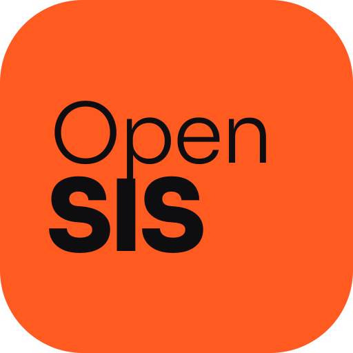

OpenSISAKHK
Kyberna v jedné appce. Rozvrh se suplováním, známky s výpočtem, co potřebuješ z další písemky, absence s hlídáním 30% hranice, volné učebny, obědy a notifikace, když škola ve tři ráno přepíše rozvrh.
Neoficiální studentský projekt, není spojený se školou ani s autory SIS.